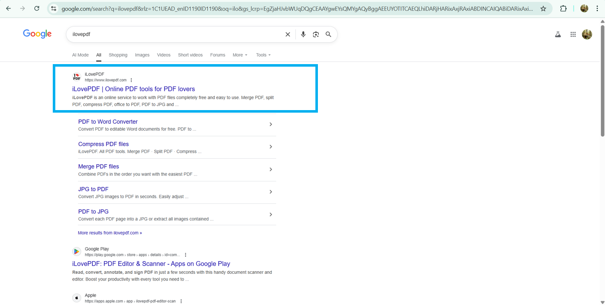
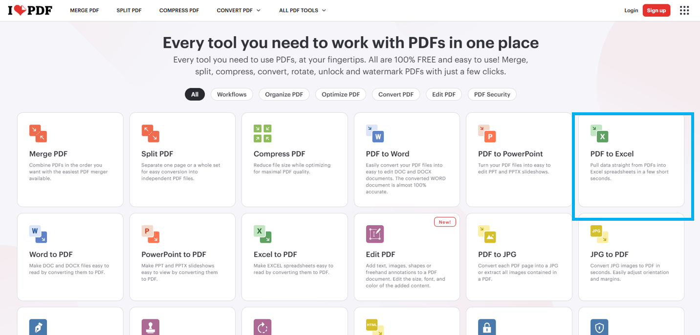
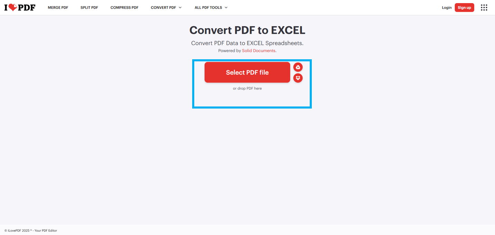
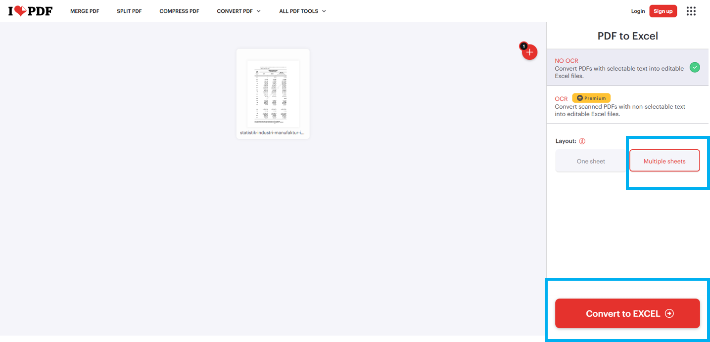
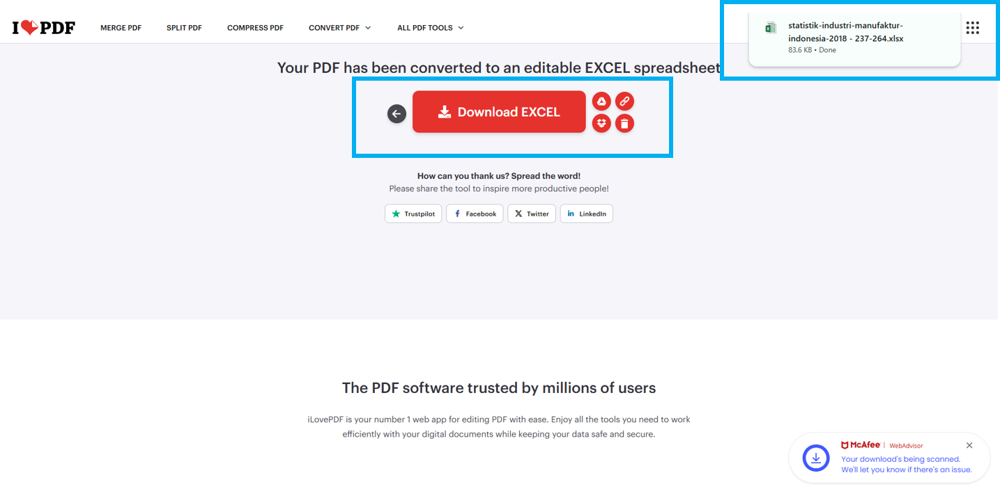

Panduan Konversi PDF ke Excel
Step-by-step menggunakan iLovePDF untuk data statistik
1
Membuka Website iLovePDF
- Buka browser (Chrome/Edge/Firefox)
- Ketik kata kunci "ilovepdf" pada kolom pencarian Google
- Pilih hasil pertama bertuliskan "iLovePDF | Online PDF tools for PDF lovers"
- Klik link tersebut untuk masuk ke website iLovePDF

2
Masuk ke Fitur PDF to Excel
- Setelah halaman utama iLovePDF terbuka, scroll hingga bagian menu tools
- Cari kotak warna hijau dengan ikon Excel
- Klik tombol "PDF to Excel" di bagian kanan bawah grid tools
- Pastikan tool yang dipilih adalah PDF to Excel, bukan PDF to Word/JPG

3
Upload File PDF
- Pada halaman Convert PDF to EXCEL, klik tombol merah "Select PDF file"
- Alternatif: tarik file PDF ke area abu-abu bertuliskan "or drop PDF here"
- Tunggu sampai jendela pemilihan file muncul
- Pilih file PDF yang ingin dikonversi

💡 Tips:
Pastikan file PDF tidak terproteksi password dan berisi data tabel yang jelas
4
Konfigurasi Layout Hasil
Pengaturan Layout:
- Multiple sheets → jika PDF memiliki beberapa tabel/halaman yang berbeda
- One sheet → jika hanya 1 tabel besar
- Untuk dataset long / multi-tabel per halaman, pilih Multiple sheets

5
Proses Konversi & Download
- Klik tombol merah "Convert to EXCEL" untuk mulai proses konversi
- Tunggu hingga proses selesai (biasanya <30 detik)
- Jangan tutup browser selama proses berlangsung
- Klik tombol merah "Download EXCEL" setelah proses selesai
- Simpan file ke folder tujuan
